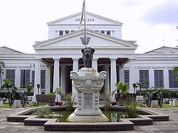

Museum Nasional Indonesia
Museum Nasional Indonesia
lokasi di Museum Nasional Indonesia
Didirikan:
24 April 1778
Lokasi:
Jl. Medan Merdeka Barat No. 12 Kelurahan Gambir,
Kecamatan Gambir Jakarta Pusat 10110
jenis:
Museum ilmu pengetahuan
Akses transportasi umum:
BRT Transjakarta: 1 2 2A 2D 6A 6B 7 9B (halte Monumen Nasional) Bus Kota Transjakarta:1A, 1P, 5A, DA4, GR1 KAI Commuter: L R (stasiun Tanah Abang)
Situs Web:
http://www.museumnasional.or.id/Museum Nasional Indonesia
Peringkat: Nasional
Kategori: Bangunan
No. Ragnas: CB. 36
Lokasi Keberadaan: Jakarta Pusat, Jakarta
Tanggal SK: 1988, 2003 & 2015
Pemilik:  Indonesia
Indonesia
Pengelola: Museum Dan Cagar Budaya
Nama sebagaimana tercantum dalam Sistem Registrasi Nasional Cagar Budaya
Nasional Indonesia, atau yang sering disebut dengan Museum Gajah, adalah sebuah museum arkeologi, sejarah, etnografi, dan geografi yang terletak di Jakarta Pusat dan persisnya di Jalan Merdeka Barat 12. Museum ini merupakan museum pertama dan terbesar di Asia Tenggara.
SEJARAH
Pada tanggal 24 April 1778, para akademisi di Hindia Belanda dan sejumlah pejabat Pemerintah Hindia Belanda bersama-sama membentuk sebuah perhimpunan bernama Bataviaasch Genootschap van Kunsten en Wetenschappen. Perhimpunan ini didirikan dengan tujuan mencapai kemajuan ilmu pengetahuan melalui pengembangan museum. J.C.M. Radermacher, ketua perkumpulan, menyumbang sebuah gedung yang bertempat di Jalan Kalibesar beserta dengan koleksi buku dan benda-benda budaya yang nanti menjadi dasar untuk pendirian museum.
Pada masa pemerintahan Inggris (1811-1816), Sir Thomas Stamford Raffles yang juga merupakan direktur dari Bataviaasch Genootschap van Kunsten en Wetenschappen memerintahkan pembangunan gedung baru yang terletak di Jalan Majapahit No. 3. Gedung ini digunakan sebagai museum dan ruang pertemuan untuk Literary Society (dahulu bernama "Societeit de Harmonie".) Lokasi gedung ini sekarang menjadi bagian dari kompleks Sekretariat Negara.
Pada tahun 1862, setelah koleksi memenuhi museum di Jalan Majapahit, pemerintah Hindia Belanda mendirikan gedung yang hingga kini masih ditempati. Gedung museum ini dibuka untuk umum pada tahun 1868.
Setelah kemerdekaan Indonesia, Lembaga Kebudayaan Indonesia yang mengelola menyerahkan museum tersebut kepada pemerintah Republik Indonesia, tepatnya pada tanggal 17 September 1962. Sejak itu pengelolaan museum dilakukan oleh Direktorat Jenderal Kebudayaan, di bawah Kementerian Pendidikan dan Kebudayaan. Mulai tahun 2005, Museum Nasional berada di bawah pengelolaan Kementerian Kebudayaan dan Pariwisata sehubungan dengan dipindahnya Direktorat Jenderal Kebudayaan ke lingkungan kementerian tersebut.
Museum Nasional juga dikenal sebagai Museum Gajah karena dihadiahkannya patung gajah berbahan perunggu oleh Raja Chulalongkorn dari Thailand pada tahun 1871 yang kemudian dipasang di halaman depan museum. Meskipun demikian, sejak 28 Mei 1979, nama resmi lembaga ini adalah Museum Nasional Republik Indonesia.
BANGUNAN
Dengan gaya Klasisisme, gedung Museum Nasional Republik Indonesia adalah salah satu wujud pengaruh Eropa, terutama semangat Abad Pencerahan, yang muncul pada sekitar abad 18. Gedung ini dibangun pada tahun 1862 oleh pemerintah sebagai tanggapan atas perhimpunan Bataviaasch Genootschap van Kunsten en Wetenschappen yang bertujuan menelaah riset-riset ilmiah di Hindia Belanda.
Sayap baru ditambahkan pada tahun 1996 di sebelah utara gedung lama. Gedung ini disebut dengan Unit B atau Gedung Arca.
Monumen Gajah
Gedung Gajah Museum Nasional (Gedung Selatan)
Gedung Arca Museum Nasional (Gedung Utara)
Tampilan depan gedung Arca
Halaman Dalam dari arah Timur
Halaman Dalam dari arah Barat
Koleksi
Museum Gajah banyak mengoleksi benda-benda kuno dari seluruh Nusantara. Antara lain yang termasuk koleksi adalah arca-arca kuno, prasasti, benda-benda kuno lainnya dan barang-barang kerajinan. Koleksi-koleksi tersebut dikategorisasikan ke dalam etnografi, perunggu, prasejarah, keramik, tekstil, numismatik, relik sejarah, buku langka dan benda berharga.
Catatan di website Museum Nasional Republik Indonesia pada tahun 2001 menunjukkan bahwa koleksi telah mencapai 109.342 buah. Jumlah koleksi itulah yang membuat museum ini dikenal sebagai yang terlengkap di Indonesia. Pada tahun 2006 jumlah koleksi museum sudah melebihi 140.000 buah, meskipun hanya sepertiganya yang dapat diperlihatkan kepada khalayak. Sebelum gedung Perpustakaan Nasional RI yang terletak di Jalan Salemba No. 27, Jakarta Pusat didirikan, koleksi Museum Gajah juga meliputi naskah-naskah manuskrip kuno. Naskah-naskah tersebut dan koleksi perpustakaan Museum Gajah lainnya kini disimpan di Perpustakaan Nasional. Sumber koleksi banyak berasal dari penggalian arkeologis, hibah kolektor sejak masa Hindia Belanda dan pembelian. Koleksi keramik dan koleksi etnografi Indonesia di museum ini cukup lengkap.
Koleksi yang menarik adalah patung Bhairawa. Patung yang tertinggi di Museum Nasional ini (414 cm) merupakan manifestasi dari Dewa Lokeswara atau Awalokiteswara, yang merupakan perwujudan Boddhisatwa (pancaran Buddha) di Bumi. Patung ini berupa laki-laki berdiri di atas mayat dan deretan tengkorak serta memegang cangkir terbuat dari tengkorak di tangan kiri dan keris pendek dengan gaya Arab di tangan kanannya. Diperkirakan, patung yang ditemukan di Padang Roco, Sumatra Barat ini berasal dari abad ke 13 - 14.